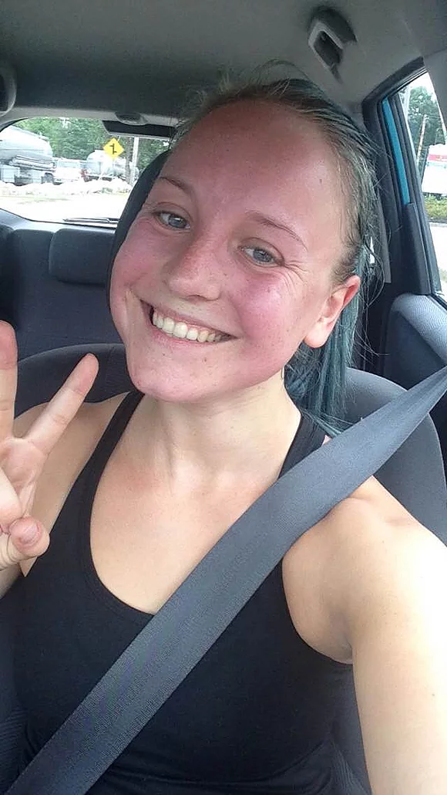

Crossfit Kicked my Butt
I don't have any illusions that I am some kind of incredible athlete. Yes, I am a personal trainer, but unless I am the only one in the room, it is very unlikely that I am the fastest, strongest, or most mobile. And for damn sure I do not have the best endurance.
After I completed a triathlon two years ago, I pretty much just stopped doing cardio altogether. I filled my workouts with lifting and yoga and mobility exercises with a bike ride or HIIT session thrown in every couple of weeks. It felt good.
In the past three months the only cardio I've done is lightly jogging from the trainer station to the front desk of the gym to make it look like I'm in a hurry to meet with a client. I also made my lifting workouts less intense. In an effort to submerge myself in self-care, I took it easy at the gym while adjusting to a new job and a new life in a new state. My workouts included lengthy, thorough warm-ups with lots of activation exercises and foam rolling. The only burpees I did were to demonstrate how to do them to a class.
Burpees really aren't that bad when you are only doing sets of three.
To put it simply, I was training my weaknesses within my comfort zone. I had identified areas of muscular strength and mobility that I needed to work on and focused on them. This was comfortable because I could move slowly and find a friendly balance of intellectual and feelings-based approaches to my movement patterns. I am glad I spent my summer moving more slowly. It helped me stay calm in anxiety-inducing situations and my squat form has never looked better.
When my mom invited me to join her at Crossfit a couple of weeks ago, I over-enthusiastically agreed in a effort to hide my nervousness and resistance to doing a something hard. My mom reassured me that they have recently been focusing a lot on the olymic lifts. Perfect, I've been wanting some coaching on my cleans and snatches. I spent the next few days mentally preparing myself to be okay with being really bad at this workout. And I am so glad I did because it was even more ridiculous than I could ever imagine.
Before I continue with my story, let me give you a quick list of the things I tend to avoid when working out:
- Running
- Reps higher than 12
- Heat
An hour before we leave for our 9:00AM class, we looked online to see what the workout will be:
- 800 meter run
- 30 Burpees
- 30 Med ball cleans
"Oh just to let you know, it's not air conditioned."
F**k.
"Don't worry mom, I'll be fine!"
I decided not to even bother checking the weather.
There was no turning back at this point. So I filled up my water bottle, headed out the door, and drove about as far away from my comfort zone I can get.

When we got there, my mom introduced me to Nicole, the coach teaching today's class. Nicole has a kind voice and is incredibly strong. She is also a very good coach. We started our warm-up and I started to feel less nervous as she gave instructions. By the third round of rowing and scap raises I was already sweating through my leggings and I was really regretting not bringing shorts instead.
All-in-all, the class went well - meaning I made it to the end. There were only four of us that morning: my mom and I and another mother-daughter pair. It was only their third class, so I felt a little less alone in my newbie-ness. All of us ended up needing to modify the workout. We only ran 400m for two out of three rounds, and rep rages for the burpees and cleans hovered more around 20 than thirty.
It was the hardest I have worked in 30 minutes in a long time.
I was also the first time in years I felt like I was going to throw up during a workout.
While I sat in the parking lot hoping a breeze would come to blow away my nausea, Nicole came out to check on me. "You need to work out more, girl."
Yeah. I really do.
During that class, my mind was working as hard as my body was. It took a lot of mental effort to keep going, to breath, to use good form when I was tired, to not pass out, and to not let my ego get upset and make me storm out of the gym. As I walked part of the last run, I had to try really hard to be embarrassed. I knew that if I let me ego get in the way, it was all over.
It was through all of this mental work that I realized that I had let myself become complacent with my workouts. What started as intentionally slowing down my pace turned into settling into making no progress at all. I had identified weaknesses, turned them into strengths, and then never moved on.
Let's get something straight here. I didn't like that workout. But I like myself a little more for doing it. I truly challenged myself for the first time in a long time, and I am finally feeling inspired to keep doing it.
Finding pleasure in the discomfort of challenge was missing from my workouts, which is a shame because it is part of what makes exercise so rewarding. I always tell my clients "if it doesn't challenge you, it doesn't change you." Crossfit gave me that kick in the pants I needed to start practicing what I preach.
I feel like I am finally out of the rut I didn't realize I had fallen into. I was avoiding endurance exercise because I was scared of how bad I knew I had gotten at it. Now that I am working to get better, I feel better.
It can be really scary to do the things we think will make us uncomfortable, but sometimes it is exactly what we need. I was feeling stuck and weak and it took doing something that intimidated me to lift myself back up.
If there is one thing Crossfit taught me, (other than that I need to workout more), it is that self-care is not always the same thing and it does not always have to move slowly. Sometimes, 90 burpees can be more healing than meditation. It all depends on what you need right then, right there.
If you are feeling stuck - like you are not making progress, or are not happy with yourself or your life - I encourage you to do something scary. Try the really hard bootcamp class, go rock climbing, take a surfing lesson. Or do something unrelated to fitness! Strike up a conversation with a stranger, wear something you love but "could never pull off." Do something that makes your heart yell with fear and excitement. Do something that will make you like yourself more. Nothing will change if you don't change something.